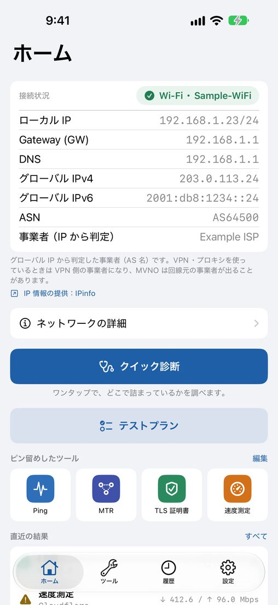
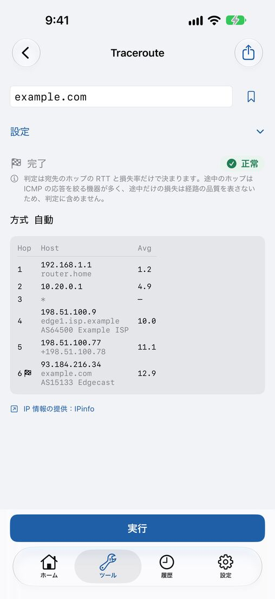
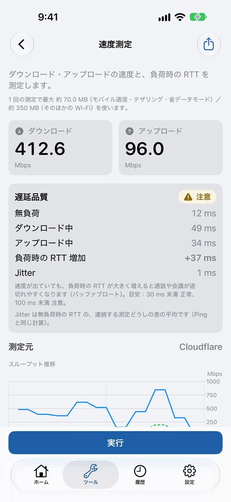
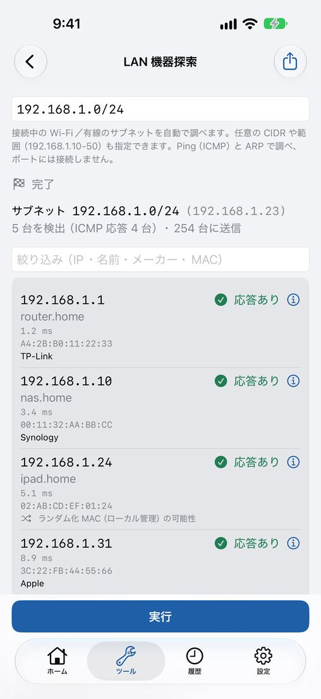

Network Field Kit
Ping・DNS・速度・LAN の診断
現場で「どこで詰まっているか」を、
すぐ確かめる。
Network Field Kit は、iPhone と iPad だけで回線の切り分け・記録・報告まで行えるネットワーク診断アプリです。診断機能は無料で、回数の制限もありません。
- iOS
- Android 準備中




特長
クイック診断で、詰まりどころがわかる
リンク → ゲートウェイへの Ping → DNS → インターネット到達性を順に調べ、どこで止まっているかを要約します。まず何を疑えばよいかが、ひと目でわかります。
現場で使うツールをひとまとめに
Ping／TCP Ping、Traceroute／MTR、Path MTU、DNS（レコード種別・リゾルバ比較・DNSSEC）、DoH／DoT、TLS 証明書、HTTP 応答、WHOIS、NTP の時刻のずれ、速度測定、遅延品質、iperf3 まで。
LAN の機器を見つけて、調べる
同じネットワークの機器を探して、メーカー（OUI）とあわせて一覧にします。機器には名前を付けられます。ポートスキャン、サブネット計算、SNMP walk、Wi-Fi のウォークテストも。
テストプランで、受け入れ確認を
Ping・DNS・速度測定など複数の手順を並べて順に実行し、合否の一覧にまとめます。結果は PDF にして、そのまま報告に使えます。
記録して、あとから見返す
定期監視で回線の断を記録し、履歴とブックマークから同じ診断をすぐやり直せます。診断レポートの作成や、ショートカットからの実行にも対応しています。
自前のサーバーなし
運営側のサーバーは持たず、診断結果を開発者が集めることはありません。速度測定は Cloudflare で行い、測定の前に同意をお聞きします。
料金
無料
診断機能はすべて無料で、回数の制限もありません。無料版は画面下部にバナー広告が表示されます（測定中は表示しません）。
Pro（買い切り）
買い切りの「Pro」を購入すると、広告の非表示、結果の CSV／JSON 書き出し、診断レポートとテストプランの PDF（書き出し・共有・印刷）、履歴の件数無制限と検索、ブックマーク・テストプランの無制限の保存と iCloud 同期、機器の名前付けの保存、ホーム画面・ロック画面のウィジェットが使えます。価格は App Store でご確認ください。
よくある質問
どの端末で使えますか？
iOS 18 以上の iPhone と、iPadOS 18 以上の iPad で使えます。
アカウントの登録は要りますか？
要りません。インストールしてすぐに使えます。Pro の iCloud 同期は任意で、ご自身の iCloud を使います。
Wi-Fi の名前（SSID）が表示されません。
iOS は、SSID の取得に位置情報の許可（使用中のみ）を求めます。端末の「設定」＞「プライバシーとセキュリティ」＞「位置情報サービス」で Network Field Kit を「このアプリの使用中のみ許可」にしてください。位置情報は記録も送信もしません。
この端末の MAC アドレスや、周りのアクセスポイントは見られますか？
iOS の制限により、この端末自身の MAC アドレスと周辺のアクセスポイントは取得できません。同じ LAN の機器の MAC アドレスは、端末の ARP の情報から表示します。
速度測定では、どこに通信しますか？
Cloudflare の測定サーバーに通信します。IP アドレスと測定の通信が Cloudflare に届き、モバイル通信ではデータ量を多く使います。初めて測る前に、内容を説明して同意をお聞きします。
問い合わせ先は？
network-field-kit-support@mayudama.app へメールでお送りください。よくある質問はサポートのページにもあります。